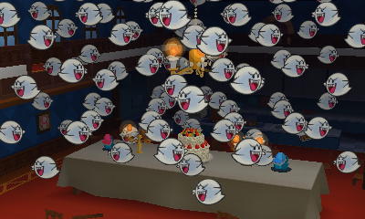
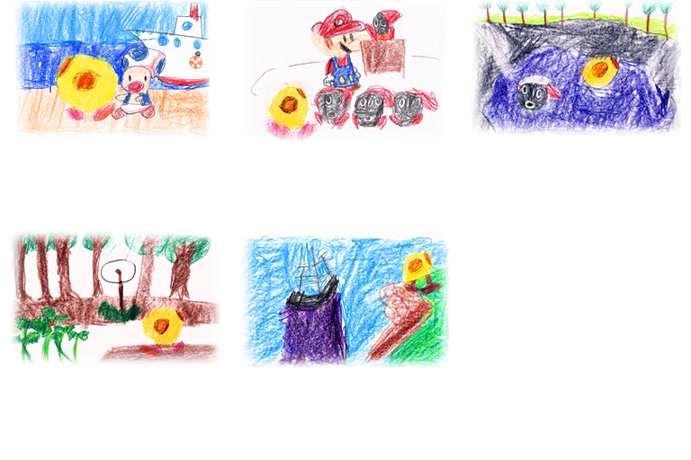

And you thought that the removal of a story was the scariest thing about this game??? Read on. This is based off an older blog post of mine, short and sweet. Updated: 11/12/20
No this isn't one of them. Mario's actually having a blast here.
1. When you use a fire based sticker on an enemy, they burn to to ashes and their remains scatter in the winds forever... While meant to be cute it comes off more morbid than plenty of things I've seen in previous games, and in those games audience members had their souls or whatever drained just for the crime of watching Paper Mario fight!
2. After you defeat Kamek for the last time he seems to lose his mind and DIES. An old man goes senile and kills over. The game doesn’t acknowledge this at all… See the gif below!
3. The Mr. Blizzard boss (renamed Mizzter Bizzard, so a rare instance of an unique named character in game) isn’t evil, he just wanted to not melt or basically pass away. The Royal Sticker crown appearing literally out of nowhere that he never asked for granted that. The sticker crowns make the bosses insane to a degree but no other boss in this game gets a sob story like this one. An attempt at self preservation doesn't stop plumbers from frying him to death with heat based stickers though. The game tries to make it bittersweet. He'll say something like 'you'll build me again next year' but obviously that's a forgery to cover the murder attempt. Think about it. If he can reincarnate every winter, why did he fear death? Don't be fooled!
"Spring came and snow started to melt My body got uncomfortably svelte I lamented the frail bod I was dealt A sticker knew my wish was heartfelt" - Mizzter Blizzard's poem (supposedly)
4. Wiggler, who does not get a unique name like Mizzter Blizzard did, has his body torn apart and the game treats this like a wacky situation. Imagine your limbs ripped from you! The body segments are sentient, mischievous, and can write diary entries, making this an impromptu chase sequence part of the game. Here we again have a strange attempt at being cute that's actually just disturbing at worse annoying at best. Failure to notice this inconceivable diary writing ability could make you permanently lose an entry for 100% completion. Lastly though Wiggler seems to be an adult his body parts are obviously children. Just odd....
5. During the Snifit or Whiffit game show they are unambiguously trying to kill you. Completely debased comedy! At least the game recognizes that something horrible is going on here. They are bad guys though so it's somewhat justified but you’re still on a deadly gameshow. Below is an image from Color Splash as it returns and gets even worse! But wait, they do it again in Origami King in spirit with Shy Guys Finish Last. Clearly these Shy Guys and Snifits are above the law and have likely killed countless plumbers that weren't clever enough to look the answers up online.

6. Annnnnd Most disturbing of all regarding Paper Mario: Sticker Star… Mario can’t use anything, not even his own boots without stickers!!!!!!!!! The horrror!!!!!!!!!!!!!!